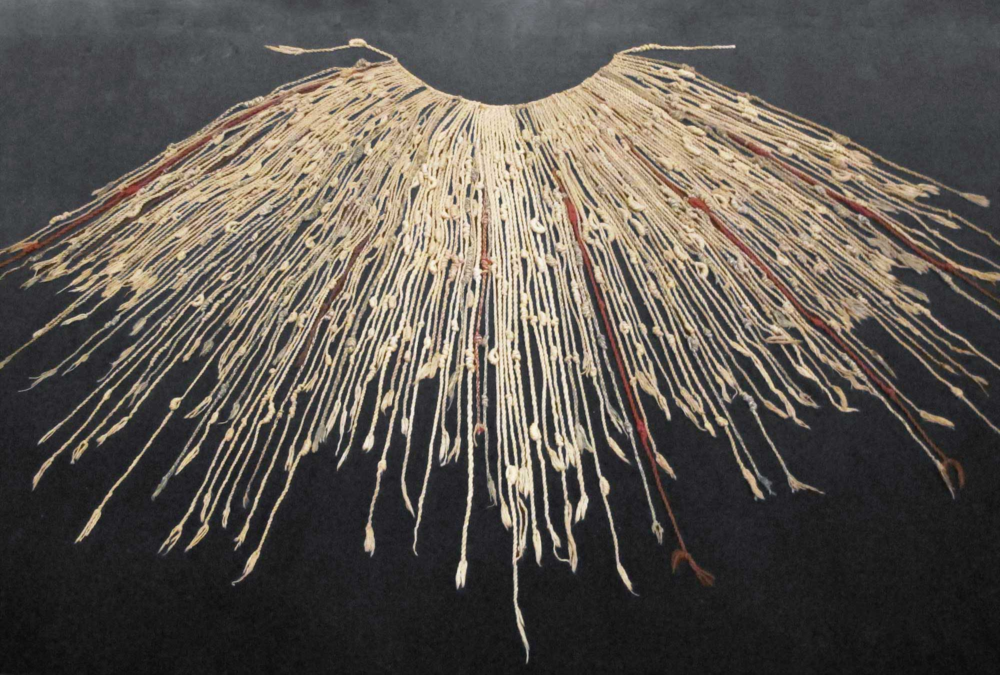
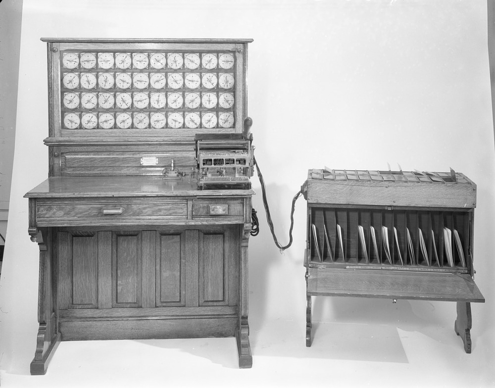

Early information keeping was completed using a variety of simple physical methods. An example of an early informational tool was the Incan Quipu.
The sets of strings were knotted to denote agricultural, census, or military records.

A surviving example of an Incan Quipu.
Processing of information has always proved important to any scale of civilization.
Computation was so important that even Confusious considered mastery of the subject a part of becoming a sage.
Computation was a human skill, but humans are imperfect, and leaving the math to humans would cause inaccuracy.
Eventually systems were set up to allow for structued, careful, and double-checked calculations to be regularly carried out.
Organizations were created to compute mathematical tables or almanacs.
One example of an advanced clerical system was the Bankers' Clearing House at 10 Lombard Street in London which allowed banks to process transfers beginning in the early 1800's.
A View of 10 Lombard Street in London where bank representatives worked to clear money transfers in a large scale clerical system.
As Europe underwent significant modernization during the industrial revolution, many machines were being designed to complete tasks more efficiently and precisely than humans could hope to achieve.
Charles Babbage sought to build a mechanical version of the logical clerical systems to compute information.
The first example of this process was shown in a constrained manner in the Difference Engine.
However, Babbage sought to generalize his computational machine into a general programable computer.
Through combined effort with Ada Lovelace, the duo concieved of the Analytical Engine.
Although the Analytical Engine was never fully constructed, the design contained most of the components that would eventually constitute the modern digital computer architecture.

A portion of Babbage and Lovelace's Analytical Engine.
As industrial quality continued to improve society, more people would attempt to utilize mechanisms to compute information.
An important innovation was made by Herman Hollerith to use electrical systems to quickly process census data.
Using machines designed to read information off punch cards, Hollerith's system computed United States census information more efficienly than ever.
Hollerith's determination and leadership pushed data processing into a new age with electro-mechanical computational systems at the forefront.

Herman Hollerith's Tabulating Machine which was used for the 1890 United States census.